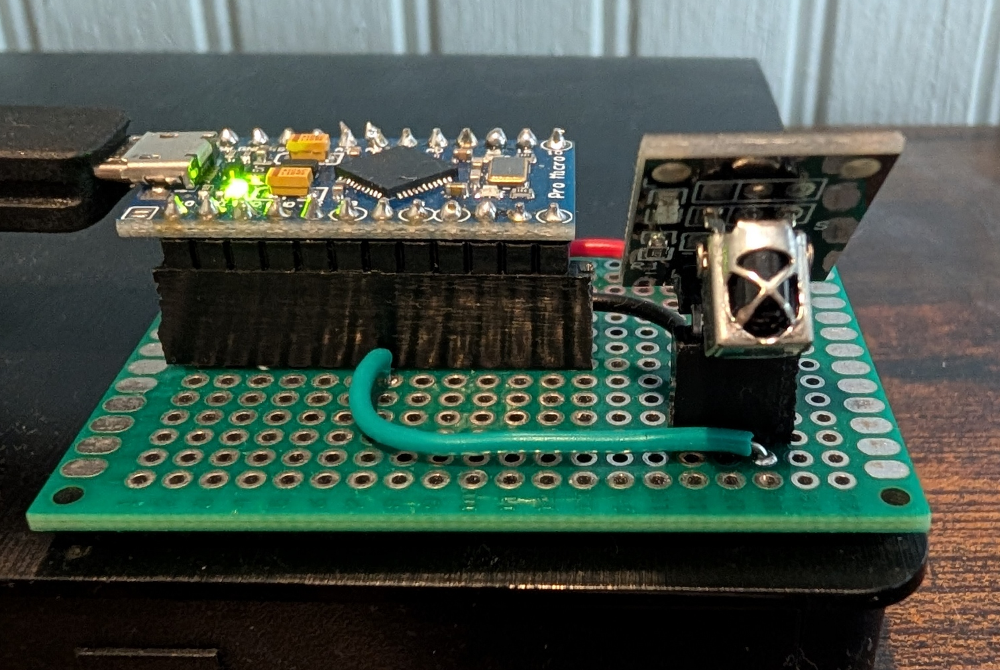
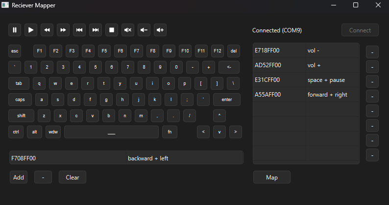

Map keys from any IR remote to keyboard keys and media controls. Turn your PC into a smart TV with an old remote you probably already have.

The universal receiver is compatible with any standard IR remote. The IR receiver uses an Arduino Micro and a KY-022 IR sensor. I designed my prototype using a perfboard. The Arduino Micro acts as a USB keyboard, so once it is mapped to a remote it is plug and play with any PC.

The software was coded in Python. It automatically connects to the Arduino and communicates with it to display the IR remote codes. Simply press a key on your IR remote and then whichever actions you want to map it to on the on screen keyboard. Once you have set your actions, It will the generate the C++ code, compile and upload it automatically. It supports up to eight remote key mappings, each of which can be mapped with up to four computer keys or media controls.